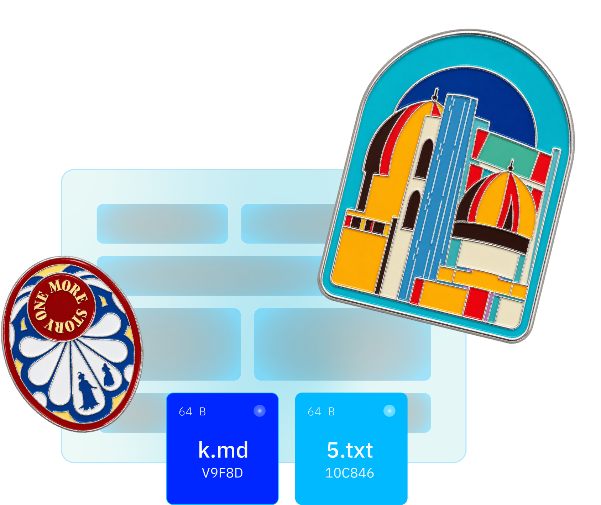
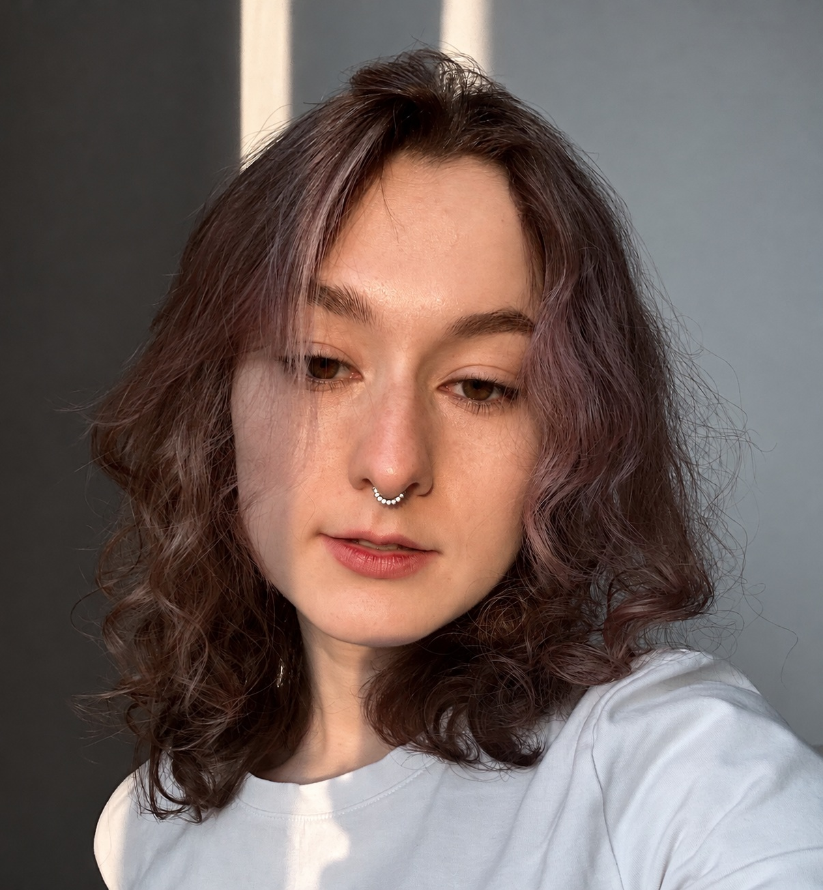

Серафима
Веселова.
Графический и моушн-дизайнер. Разрабатываю айдентику и графические коммуникации, создаю иллюстрации и видео.


Обо мне.
Привет! Я коммуникационный и моушн-дизайнер, выпускница Школы дизайна НИУ ВШЭ. Начинала с современного искусства — этот опыт сформировал мой интерес к визуальным метафорам, экспериментам и поиску нестандартных решений.
Разрабатываю визуальные концепции, айдентику, графику и анимацию. Особенно люблю работать с механикой движения — от пластики отдельного элемента до ритма целого ролика.
Работаю с брендами, художниками и культурными проектами. Веду проекты от исследования и разработки концепции до финальной реализации. Совмещаю концептуальный подход с вниманием к деталям, самостоятельно работаю над задачами и взаимодействую с командами.
Избранные
кейсы.
Шоурил.
Лучшие работы и мой диапазон: от айдентики до моушн-графики.